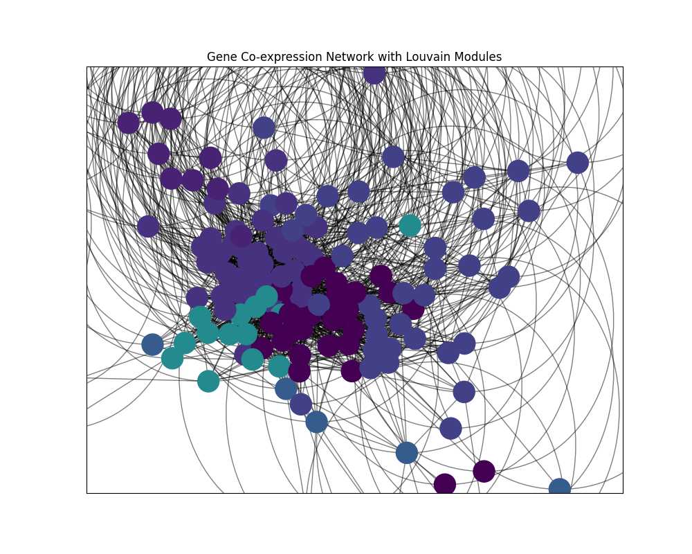
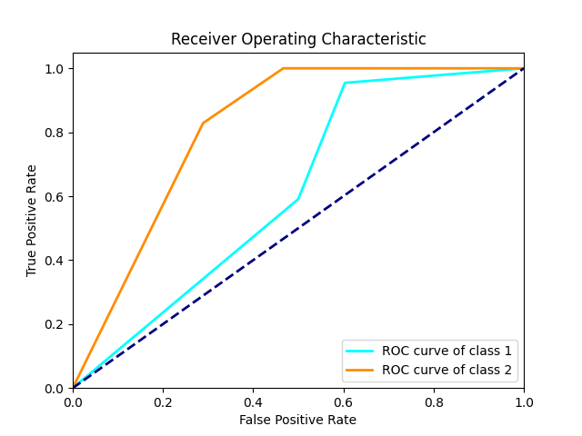
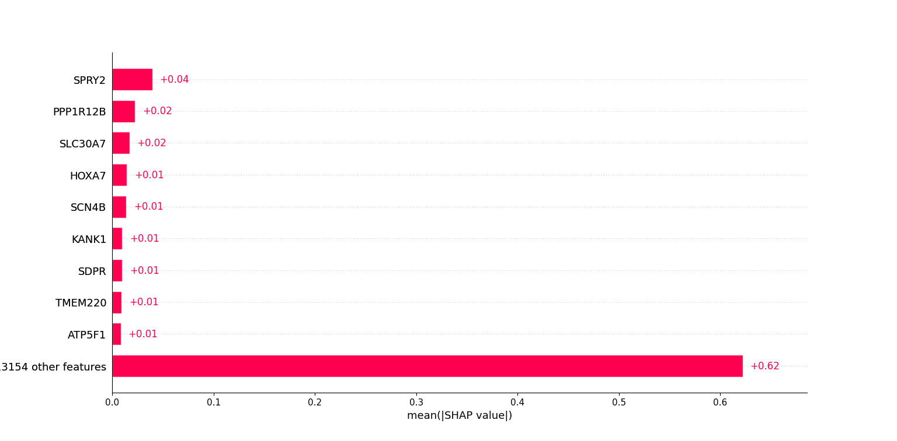

记录全国大学生数学建模竞赛西北工业大学校赛的过程¶
惊讶的是这次的校赛两道题均为数据题（本来是以为会有类似于国赛A的微分方程赛题，有点想尝试一下A的风格），两题差别不大，但由于B题只有两问且是一个较为基础的规划类问题（感觉能学习的东西不如A题多），遂选择了更符合我们做题习惯的A题
A 癌症早诊标记物设计及其演化机理认知
癌症是一种遗传变异相关的疾病。在很多情况下，患者在确诊的时候就已经处于疾病的中晚期了，错过了治疗的最佳时机。因此，如何开展面向癌症早期的诊断标记物，一直以来都是临床医学面临的主要难题之一。
目前的癌症诊断及病理分期判定，主要依赖肿瘤的大小、肿瘤是否转移、患者的生化指标、临床病理图像分析等手段，这些方法非常依赖检测的精准度和医生的临床经验。而根据生物学中心法则可知，基因是决定表观性状变化的根本因素。患者的肿瘤状态变化、生化指标变化、或病理图像的异常，往往会晚于基因数据的异常。因此，通过对基因数据的分析，有可能更早的发现癌症，为疾病的早诊提供了新的思路，也能够为更深入的了解癌症发生发展的机理提供更深的见解。
基因表达数据就是这样一种常见的基因相关数据。它反映的是基因转录产物（如信使RNA，也叫mRNA）在细胞中的表达丰度。这些数据可以用于分析不同的条件下哪些基因的表达发生了改变、基因的活动是如何受外界条件的变化而变化、以及基因之间有何共表达关系。这些数据与特诊对于临床诊断标记物设计、癌症发生发展的机制认知等有着重要的作用。
请仅根据题目所提供的数据，尝试回答下列问题：
（1） 在癌症的早期与晚期，分别是哪些基因的表达发生了较为显著的变化，这些基因之间的关系如何？
（2） 请设计或分析，哪些基因或基因之间关系所构成的特征能够被用来作为诊断的标记物，以此判定或分析患者当前的病理状态。请给出具体的量化指标（或特征集合），并评价所设计的诊断标记物的识别准确性；更具体的，给出早期癌症诊断标记物；
（3） 不同的患者之间存在着极强的异质性，如何在分析过程中尽可能的消除异质性的影响？
名词解释：
基因表达数据：基因转录产物在细胞中的表达丰度，用以描述当前基因的活跃状态；
生物标记物（或诊断标记物）：一种用于判定患者病理状态的特征，可以是某个或某些基因表达值，也可以是某些基因表达关系的某种量化值。通常，生物标记物希望规模越小越好，这样可以节省检测成本；使用生物标志物作为输入特征，可以输出或判定该患者的病理分期或病理状态；
异质性：数据之间的差异程度的一种描述。不同的患者，即使他们处于同一种病理阶段，他们的基因表达数据、生化指标、医学影像数据也存在着极大的差异性，会给数据分析带来较大的挑战；
数据文件说明：
（1） 附件1：Normal_exp.csv: 正常人的基因表达数据；
（2） 附件2：EarlyStage_exp.csv：早期患者的基因表达数据；
（3） 附件3：LaterStage_exp.csv：晚期患者的基因表达数据；
上述文件中，第一行为表头，给出各个患者的样本ID（第一列除外）；第一列为基因名称，第二列至最后一列，为各个患者的基因表达值；
参考文献：
[1] https://ww2.mathworks.cn/help/bioinfo/ug/gene-expression-profile-analysis.html?requestedDomain=cn
[2] Langfelder, P., Horvath, S. WGCNA: an R package for weighted correlation network analysis. BMC Bioinformatics *9*, 559 (2008). https://doi.org/10.1186/1471-2105-9-559
首先看了下数据，压缩包中已经提供了正常人、早期患者、晚期患者的13163个基因的表达数据，关于“基因表达数据”题中所给的解释太简洁，查询了下了解到：
基因表达数据通常以矩阵的形式呈现，其中行代表基因，列代表样本（通常是不同的生物体或实验条件）。每个元素表示对应基因在相应样本中的表达水平。
模型假设¶
- 假设提供的基因表达数据不会因为患者的年龄性别等因素而有明显变化
- 假设提供的基因表达数据均为正确真实的
问题分析¶
针对问题一，要求找出在早晚期表达水平差异显著的基因，可以比较差异表达分析、t检验、Wilcoxon检验等差异分析方法，选定合适的差异检验方法来计算差异，以此提取出显著变化的基因，之后构建基因共表达网络并进行模块检测，采用Louvain算法进行模块度优化，据此可视化模块内基因之间的关系；根据基因表达数据和基因共表达网络，从共表达关系、共同调控关系两个方面分析基因之间的关系
针对问题二，需要找出能够作为诊断特征的基因，以此判定或分析患者当前的病理状态。我们考虑将早期、晚期、正常人的基因表达数据随机打乱，比较多层感知机（MLP），支持向量机（SVM）和XGBoost三种模型，之后选定合适的算法对其进行分类，再可以通过机器学习解释性框架得出模型分类的依据排序，以此来确定能够作为诊断依据的基因。
针对问题三，题中提到不同的患者之间存在着极强的异质性，需要在分析过程中尽可能的消除异质性的影响，异质性源于患者之间的生物学和环境差异。为了减少异质性对研究结果的影响，我们需要制定多种策略。可以通过严格的样本选择和分层来控制实验设计阶段的异质性，也可以尝试用亚组分析来揭示特定亚组的模式和异质性来源。也可以采用随机效应模型和Meta回归分析探索异质性体现显著的患者，最后在解释结果时应进行适当的敏感性分析
问题一¶
问题一要求分析在癌症的早期与晚期，分别是哪些基因的表达发生了较为显著的变化，以及这些基因之间的关系，也就是要先对早期和晚期的基因表达数据进行差异性分析，考虑到：t检验适用于连续型变量且符合正态分布的情况，具有较高的效率和统计功效。它对样本量要求较小，适用于较小的样本量。Wilcoxon符号秩检验适用于连续型变量，对数据分布没有特定要求，可以处理非正态分布和有序分布的数据。它基于观察值的秩次进行比较，因此对异常值不敏感。我们最终确定选用Wilcoxon检验
Wilcoxon检验¶
Wilcoxon检验（Wilcoxon rank-sum test）：¶
在统计学中，Wilcoxon检验（也称为Wilcoxon秩和检验或Mann-Whitney U检验）用于比较两组样本中位数是否有显著差异。中位数是一组数据的中间值，当数据不服从正态分布时，中位数通常被用来代表数据的中心位置。
Wilcoxon检验的原假设是两组样本的中位数相等，备择假设是两组样本的中位数不相等。通过对两组样本的秩次进行比较，Wilcoxon检验可以确定两组样本的中位数是否存在显著差异。
具体步骤如下：
- 数据合并和秩次分配：首先，将两组样本的数据合并，并按大小排序。然后，为每个数据分配一个秩次，其中最小的值为秩次1，依次递增，直至最大的值为秩次n（n为样本总数）。
- 计算秩和：对于每一组样本，计算其秩次之和。对于较小的样本组，记为W1，对于较大的样本组，记为W2。
- 计算Wilcoxon统计量：Wilcoxon统计量是两个秩和中较小的一个，即𝑊=min(𝑊1,𝑊2)W=min(W1,W2)。
- 计算p值：根据Wilcoxon统计量的分布，计算在原假设下获得观察到的或更极端统计量的概率。根据p值来判断在显著性水平（如α=0.05）下，是否拒绝原假设。
- 判断显著性：如果p值小于显著性水平，则拒绝原假设，认为两组样本的中位数存在显著差异；反之，则接受原假设，认为两组样本的中位数没有显著差异。
通过Wilcoxon检验分析两个数据文件后，我们得到了每一个基因对应的Wilcoxon统计量和p值，经过以下筛选原则：
- 检查Wilcoxon统计量的符号：根据Wilcoxon统计量的正负，判断两组样本中哪一组的秩次之和更大。
- p值检验：根据p值判断两组样本之间的差异是否显著。如果p值小于显著性水平0.05，则可以拒绝原假设，认为两组样本的中位数存在显著差异；反之，则接受原假设，认为两组样本的中位数没有显著差异。
最终我们从13163个基因中初步筛选出了早晚期表达水平有明显差异的2120个基因。（下表为早晚期表达差异排名前十的基因）
| Gene Name | Wilcoxon Statistic | p-value |
|---|---|---|
| TTC22 | 5.507305 | 3.64E-08 |
| CNN3 | 5.018858 | 5.20E-07 |
| PARP3 | 4.876963 | 1.08E-06 |
| ARMCX2 | 4.780774 | 1.75E-06 |
| CALM1 | -4.48266 | 7.37E-06 |
| PIR | -4.44718 | 8.70E-06 |
| ZFP36L2 | 4.417168 | 1.00E-05 |
| RRM2 | -4.38238 | 1.17E-05 |
| ALPK1 | 4.367368 | 1.26E-05 |
| C15orf23 | -4.36532 | 1.27E-05 |
找出了这些表达有明显差异的基因，就可以开始分析它们之间的关系。在Genes related to the very early stage of ConA-induced fulminant hepatitis: a gene-chip-based study in a mouse model一文中我了解到一种专门分析基因表达的方法——基因共表达网络
基因共表达网络是一种用于分析基因表达数据的工具，它通过检测基因之间的相关性来揭示它们之间的功能联系和调控关系。这种网络通常是通过计算基因表达数据的相关系数或其他相似性度量来构建的。
通过基因共表达网络分析方法，可以将在功能上相关的基因识别为一个模块（module）,通过对模块的进一步的分析，能够实现筛选module的核心基因，关联性状，代谢通路建模，建立基因互作网络等高级分析。Gene co-expression（基因共表达）是一种使用大量基因表达数据构建基因间的相关性，从而挖掘基因功能的一类分析方法。基因共表达网络（GeneCo-expreesion Network）是用来展现基因间相互作用关系的一种手段，是基于基因间表达数据而构建调控网络图。
构建基因共表达网络¶
- 计算基因间的相关性：对于每一对基因，计算它们的相关系数
- 选择阈值：根据相关性度量的计算结果，选择一个适当的阈值来确定基因之间的连接。根据经验将其定为0.8
- 构建网络：根据选定的阈值0.8，构建基因共表达网络。在网络中，每个基因表示为网络中的一个节点，相关性高于阈值的基因对之间存在一条边。
- 圆圈代表基因，直线代表基因之间存在调控关系。圆圈的大小代表degree值，即网络中某一基因与周围基因的关系数量，degree越大，代表与它有相互作用关系的基因越多。
- 圆圈的颜色是按照k-core进行划分的聚类结果。k-core表示在一个子图中，所有的点至少连接着k个点，其用以评估基因在网络位置的中心程度，值越大表示degree越大且越中心。
- 相同大小的k-core体现的是基因之间的相似性及功能相关性
基于Louvain算法的模块度优化¶
Louvain算法是一种用于检测网络中社区结构的基于模块度优化的算法。社区结构指的是网络中节点的聚类，使得同一社区内的节点具有较高的内部连接性，而不同社区之间的连接性较低。Louvain算法旨在将网络中的节点分配到不同的社区中，以最大化网络的模块度。该算法具有高效性和可扩展性，并且在实践中被广泛应用于社交网络分析、生物网络分析、交通网络分析等领域。它能够帮助揭示复杂网络中的社区结构，从而有助于理解网络的组织结构、功能和调控机制。
Louvain算法步骤：
- 定义模块度（Modularity）：模块度是一种用于评估社区结构质量的指标，它量化了网络中节点与其所在社区内其他节点之间连接的密度与预期连接的差异。具体而言，模块度定义如下： $$ Q = \frac{1}{2m} \sum_{ij} \left( A_{ij} - \frac{k_i k_j}{2m} \right) \delta(c_i, c_j) $$
其中，\(A_{ij}\)是网络中节点\(i\)和\(j\)之间的边权重，\(k_i\)和\(k_j\)分别是节点\(i\)和\(j\)的度（即相连边的数量），\(m\)是网络中所有边的总权重之和，\(c_i\)和\(c_j\)是节点\(i\)和\(j\)所在的社区，\(\delta(c_i, c_j)\)是Kronecker符号，当\(c_i = c_j\)时为1，否则为0。
- 初始化：将每个节点视为一个单独的社区，形成初始的社区划分。
- 迭代优化：在每一轮迭代中，遍历网络中的每个节点，计算将该节点移动到相邻社区中所带来的模块度变化。节点会被移动到能够最大化模块度增加的邻居社区中。这个过程会迭代多次，直到不再有节点可以移动为止。
- 合并社区：在每一轮迭代中，可以将模块度增加的节点所在的社区与目标社区合并，以形成更大的社区结构。这有助于减少社区的数量并简化社区结构。
- 终止条件：迭代优化过程会一直进行，直到不再有节点可以被移动为止。在这种情况下，算法收敛，形成最终的社区划分。
- 后处理：通常，可以对社区划分进行后处理，例如合并具有相似特征或功能的社区，以进一步简化社区结构。


晚期基因共表达网络 早期基因共表达网络
早期第0类的节点数据表示（部分）：
| Node | Module | Gene |
|---|---|---|
| 0 | 0 | ARHGEF10L |
| 26 | 0 | SMAD7 |
| 55 | 0 | FER1L4 |
| 62 | 0 | NSUN6 |
| 64 | 0 | ERGIC3 |
晚期第0类节点数据展示（部分）：
| Node | Module | Gene |
|---|---|---|
| 0 | 0 | ARHGEF10L |
| 3 | 0 | DHX9 |
| 12 | 0 | ITGA1 |
| 16 | 0 | TACO1 |
| 22 | 0 | GPSM2 |
基因共表达网络分析¶
基于上述建立的基因共表达网络，可以开始分析基因之间的关系，在生物药理学中，基因之间存在的关系有：
- 共表达关系（Co-expression）： 如果两个基因在不同条件下表达的模式具有高度的相似性，那么它们之间存在共表达关系。共表达关系可能暗示着这两个基因在相同的生物过程中发挥类似的功能。
- 共同调控关系（Co-regulation）： 一些基因可能由相同的转录因子或调控网络调控，因此它们之间可能存在共同调控关系，即它们的表达受到相似的调控因子的影响。
共表达关系分析
基因表达数据的相关系数作为共表达关系的衡量方法。计算基因表达数据的相关系数矩阵，然后根据设置的阈值筛选出相关系数大于阈值的基因对，将它们作为共表达的关系。分别对早期和晚期的基因表达数据进行计算，部分结果如下表所示：
| Gene1(late) | Gene2(late) | Correlation |
|---|---|---|
| KRT6B | S100A2 | 0.9935 |
| GPD1 | PLIN1 | 0.969674 |
| ADIPOQ | HSPB1 | 0.967722 |
| KRT14 | KRT6B | 0.965035 |
| LIPE | GPD1 | 0.964958 |
| Gene1(early) | Gene2(early) | Correlation |
|---|---|---|
| LIPG | PTN | 0.998122 |
| ATP1A1 | KCTD14 | 0.986526 |
| SLPI | KCTD14 | 0.98634 |
| CLTC | C17orf71 | 0.984211 |
| VTCN1 | KCTD14 | 0.984185 |
这些基因对存在显著的共表达关系。
共同调控关系分析
基因之间的共同调控关系指的是这些基因在生物学上由相同的调控因子或调控网络所调控。在生物系统中，基因表达受到复杂的调控，其中包括转录因子、miRNA、染色质修饰等调控因子的作用。当两个或多个基因受到相同调控因子的调控时，它们就会表现出共同调控的特征，可能在相同的生物过程中发挥作用，参与相同的通路或功能模块。基于该定义，根据基因共表达网络的定义可以知道，网络中的社区通常对应于具有相似表达模式或相似调控关系的基因集合。这些社区反映了基因之间的共同调控、共同参与的生物过程或功能模块等特征。所以在网络中的每一类中的基因之间，存在共同调控关系的可能性较大。
问题二¶
模型选择¶
问题二需要找出能够作为诊断特征的基因，以此判定或分析患者当前的病理状态。我们考虑将早期、晚期、正常人的基因表达数据随机打乱，通过算法对其进行分类，得出模型分类的依据，即能够作为诊断依据的基因。关于分类算法的选择，我们比较了多层感知机（MLP），支持向量机（SVM）和XGBoost三种算法模型：
多层感知机（MLP）
多层感知机（Multilayer Perceptron，MLP）是一种基本的人工神经网络（Artificial Neural Network，ANN）架构，用于解决分类和回归问题。它由多个神经元组成的多层结构，每一层都与下一层全连接。MLP由输入层、隐藏层和输出层组成。输入层接收来自数据集的特征向量，隐藏层负责将输入特征映射到更高维的空间，并通过激活函数引入非线性。最后，输出层根据模型任务的不同，可以有不同数量的节点，对于分类问题，输出层通常具有与类别数量相同的节点，每个节点对应一个类别，并输出相应的概率。MLP的训练通常通过反向传播算法（Backpropagation）完成，该算法使用梯度下降法来最小化模型的损失函数。在训练过程中，模型通过不断调整权重和偏差来最小化预测值与真实值之间的误差。
MLP的优点体现在能够学习复杂的非线性关系，相对于简单的线性模型，MLP能够更好地捕捉数据中的特征。
支持向量机（SVM）
支持向量机（Support Vector Machine，SVM）是一种经典的监督学习算法，用于解决分类和回归问题。它的主要思想是找到一个最优的超平面，将不同类别的数据分隔开来，并且尽量保持数据点与超平面之间的间隔最大化。在二分类情况下，SVM试图找到一个决策边界，将两个类别的数据点分开。这个决策边界就是一个超平面，它可以用一个线性方程表示。如果数据不是线性可分的，SVM可以通过使用核函数将数据映射到高维空间中，从而找到一个更复杂的超平面来分割数据。
SVM的优点在于其在高维空间中表现良好，适用于处理非线性可分的数据。
XGBoost
XGBoost（eXtreme Gradient Boosting）是一种高效的、灵活的机器学习算法，主要用于解决分类和回归问题。它是一种基于决策树的集成学习方法，通过集成多个弱分类器（通常是决策树），从而构建一个强大的集成模型。
-
梯度提升算法（Gradient Boosting）：XGBoost基于梯度提升算法，通过迭代地训练决策树，每一棵树都试图纠正前面所有树的残差，从而逐步提高模型的预测性能。
-
正则化：XGBoost引入了正则化项，包括L1和L2正则化，以防止过拟合，提高模型的泛化能力。
-
自定义损失函数：除了常见的损失函数（如均方误差、交叉熵等），XGBoost还支持用户自定义的损失函数，以适应不同的问题需求。
-
特征重要性评估：XGBoost可以计算每个特征的重要性，帮助理解模型对特征的使用情况，从而进行特征选择和解释模型。
-
并行化处理：XGBoost使用了并行化技术，包括多线程和分布式计算，以加速训练过程，特别是在处理大规模数据时效果显著。
-
缺失值处理：XGBoost能够自动处理输入数据中的缺失值，无需进行额外的预处理。
-
支持分类和回归任务：XGBoost既适用于分类问题，也适用于回归问题，因此具有广泛的应用范围。
在比较以上三种算法的过程中发现，多层感知机的分类准确性最高，对于筛选出正常人的准确性高达96%，但从模型中提取特征效果不佳，只能很好地按照数据进行分类；采用支持向量机的分类效果一般，对于识别出早期的正确率只有30%；实验中XGBoost表现出了良好的分类效果，从模型中提取特征也相对方便，最终决定使用XGBoost来找出能够被用来作为诊断的标记物的特征基因
XGBoost分类模型的构建¶
Python提供的XGBoost库可以方便地构建出初步的模型。XGBoost的构建过程可以分为初始化模型、计算损失函数的梯度和二阶导数、构建树模型、更新叶子节点权重等几个关键步骤。
- 初始化模型参数： 首先，XGBoost会初始化一些模型参数，如学习率（learning rate）、树的数量（n_estimators）、树的最大深度（max_depth）等。
- 计算损失函数的梯度和二阶导数： XGBoost的优化目标是最小化损失函数，通常使用梯度提升方法进行优化。在每一轮迭代中，XGBoost会计算每个样本的损失函数关于预测值的一阶导数（梯度）和二阶导数（Hessian矩阵），以便构建弱学习器。
- 构建树模型： XGBoost通过迭代地添加新的树来逼近损失函数的负梯度。在每一轮迭代中，XGBoost会构建一棵回归树，该树的结构是通过贪心地最小化当前节点的损失函数和正则项得到的。构建树的过程中，XGBoost会使用特征的子集，以增加模型的随机性，并减少过拟合。
- 更新叶子节点权重： 在构建完树模型后，XGBoost会使用一阶和二阶导数来更新每个叶子节点的权重，以最小化损失函数。这个更新过程是通过梯度下降法实现的，同时也会考虑到模型的正则化项，如树的叶子节点权重的L1和L2正则化。
- 重复迭代： XGBoost会重复执行构建树和更新叶子节点权重的步骤，直到达到预先设定的迭代次数或损失函数的改善不再显著。
- 集成弱学习器： 最后，XGBoost会将所有构建的树模型进行加权集成，得到最终的强学习器模型。
尝试用XGBoost对打乱的正常、早期、晚期数据进行学习与分类，将数据集划分为训练集、验证集和测试集，其中训练集占比___，验证集占比---，测试集占比---。确保三个数据集在目标变量的分布上保持一致。得到如下结果：
| precision | recall | f1-score | support | |
|---|---|---|---|---|
| 正常人 | 0.96 | 1 | 0.98 | 23 |
| 早期患者 | 0.77 | 0.73 | 0.75 | 22 |
| 晚期患者 | 0.62 | 0.66 | 0.64 | 35 |
| accuracy | 0.66 | 80 | ||
| macro avg | 0.65 | 0.66 | 0.65 | 80 |
| weighted avg | 0.65 | 0.66 | 0.65 | 80 |
XGBoost分类的准确性评估¶
为了评估XGBoost分类的准确性，我们选用绘制ROC曲线来展示和说明。
ROC曲线，全称为“受试者工作特征曲线”（Receiver Operating Characteristic curve），是一种评估二分类问题中分类器性能的图形工具。它通过描绘在不同阈值下分类器的真阳性率（True Positive Rate, TPR）和假阳性率（False Positive Rate, FPR）之间的关系来展示分类器的性能。
真阳性率（TPR），也称为敏感性或召回率，表示在所有实际为正例的样本中，模型正确预测为正例的比例。计算公式为： $$ \text{TPR} = \frac{\text{TP}}{\text{TP} + \text{FN}} $$ 其中，TP 是真阳性数量，FN 是假阴性数量。
假阳性率（FPR），表示在所有实际为负例的样本中，模型错误预测为正例的比例。计算公式为： $$ \text{FPR} = \frac{\text{FP}}{\text{FP} + \text{TN}} $$ 其中，FP 是假阳性数量，TN 是真阴性数量。
ROC曲线的横坐标是FPR，纵坐标是TPR。曲线下的面积被称为AUC（Area Under the Curve），它是一个介于0和1之间的值，用于量化分类器的整体性能。AUC值越接近1，表示分类器的性能越好；AUC值越接近0.5，表示分类器的性能接近随机猜测。一般来说，AUC-ROC值越高，模型的性能越好；ROC曲线越靠近左上角，表示模型在保持低FPR的同时实现了高TPR。

从图中可以看出，我们所构建的XGBoost模型判断早期、晚期患者的效果显著。
基于SHAP机器学习解释器的特征分析¶
前述过程已经建立好了可以通过分析基因表达数据判断患者患病情况的XGBoost分类模型，想要提取该模型中对基因表达数据的分类依据，即基因表达数据的特征，我们选用SHAP机器学习解释性框架来对XGBoost模型进行特征分析
SHAP（SHapley Additive exPlanations）是一个流行的机器学习解释性框架，它基于合作博弈论中的Shapley值来解释模型预测。Shapley值是一种公平分配游戏中奖励的方法，SHAP利用这一概念来分配每个特征对模型预测的贡献度。以下为SHAP分析的过程：
- 训练XGBoost模型：前文已经建立好了可以通过分析基因表达数据判断患者患病情况的XGBoost分类模型，可以用于进行分类和预测。
- 创建SHAP解释器：使用SHAP库中的
TreeExplainer类创建一个解释器对象。这个对象接受XGBoost模型作为输入。 - 计算SHAP值：使用解释器对象的
shap_values方法来计算特征的SHAP值。用XGBoost模型作为输入，并返回一个与数据集同样形状的数组，其中包含了每个样本的每个特征对预测结果的贡献值。 - 解释SHAP值：SHAP值可以帮助理解每个特征是如何影响每个预测结果的。一个正的SHAP值表示该特征对预测结果有正向影响，而一个负的SHAP值表示有负向影响。
- 可视化SHAP值：SHAP库提供了多种可视化工具来帮助解释这些值。本文选用
summary_plot，其可以显示所有特征对所有样本预测的平均影响，force_plot可以显示单个样本的特征贡献。
将每个基因对应的SHAP值进行排序并输出，得到下图所示数据：


图一为力图（Force Plot）：力图是瀑布图的另一种形式，以直观的方式展示单个样本的特征贡献。红蓝色箭头表示特征对预测结果的影响方向和大小。基准值（base value）和最终预测值（f(x)）在图中标出。
图二为瀑布图（Waterfall Plot）：瀑布图展示了单个样本的特征贡献。横轴表示SHAP值，纵轴列出了各个特征。蓝色条表示特征对预测有负向影响，红色条表示正向影响。图的底部显示模型的基准值（E[f(x)]），即模型预测的平均值。从图底向上看，每个条形的长度表示该特征对预测结果的贡献大小。
根据SHAP机器学习解释器框架给出的每个基因的SHAP值排序，我们可以得出SPRY2、PPP1R12B、SCN4B、TMEM220、SDPR等基因在XGBoost模型进行分类时起到了较为显著的作用，它们可以看作是判断早晚期的特征基因，例如，当观测到SPRY2比以前有明显的减少，就可以说明患者有偏向晚期的疾病演化趋势；当观测到S100B比以前有明显的增加，就可以说明患者有从正常偏向早期的疾病演化趋势。
诊断标记物的识别准确性分析¶
为分析诊断标记物的识别准确性，我们将筛选出的基因从原始基因表达数据中提取出来，只对这些具有显著影响的基因应用XGBoost进行分类。结果显示，只采用这些基因来判断早期、晚期、正常人的效果比采用所有数据判断的准确性要高，其中前文提到的SPRY2基因用于对正常人进行判断的准确性高达94%，KANK1基因对于判断早期患者的正确率最高，同时其对于晚期患者的准确性高达70%

问题三¶
问题三提到不同的患者之间存在着极强的异质性，需要在分析过程中尽可能的消除异质性的影响。异质性是指在一个群体、材料或数据集中存在的差异或多样性。它可以出现在个体层面上，也可以是群体层面上的总体异质性。在社会科学、生物学和医学等领域，异质性是一个常见的现象，它可以源于遗传、环境、社会经济因素、随机事件等多种原因。根据异质性产生的原因，本文从以下几点分析讨论异质性消除的方法：
Meta回归和混合效应模型¶
由于题中所给数据仅有患者编号和基因名称，导致异质性来源不明确，我们使用Meta回归分析来探索可能影响效应大小的患者。Meta回归分析是一种统计方法，用于合并多个独立研究的结果，以估计变量间的效应大小。它通常用于汇总多个研究的数据，以获得更可靠、更准确的估计值。通过Meta回归分析，可以找出异质性体现明显的患者，也就是说，他们的基因表达数据不能很好的契合分类模型，最后通过调查这些患者的其他信息如年龄，性别，遗传病史等来确定异质性的来源。本文使用Python中的statsmodels库进行Meta回归分析。
Meta回归分析步骤：
- 数据提取：读入题中所给基因表达数据，包括作为因变量的统计量（如参数估计量、显著性、t统计量等）。
- 模型建立：建立相应的回归模型，检验各自变量对因变量的影响。
- 回归分析：采用适当的回归方法（如最小二乘法、最大似然法等）进行分析，我们选用普通最小二乘回归（Ordinary Least Squares, OLS）以确定哪些协变量与研究结果的异质性有关。
下图为标号为TCGA-A8-A079-01患者的数据表单，在这个回归结果中，我们可以查看条件数（Cond. No.）来判断自变量之间的共线性。共线性是指自变量之间存在高度相关性的情况，这可能会导致回归系数估计不准确，增加参数估计的不稳定性。条件数是一个指标，用于衡量自变量矩阵的条件（condition）的大小，其值越大，表示共线性越严重。通常，当条件数大于30时，就表明存在较严重的共线性问题。可以看到条件数的值远远超过了标准值，表明该患者存在较严重的共线性问题。因此，可以推断在这个患者身上，自变量之间可能存在较严重的相关性，即存在异质性。

由Meta回归分析找出的异质性表现最显著的患者为TCGA-A8-A09G-01、TCGA-AQ-A04H-01、TCGA-A8-A079-01、TCGA-BH-A0BA-01、TCGA-A8-A06T-01。后续研究者可以着重关注这些患者的基本信息，找出能消除异质性的分类信息以提高诊断正确性。
亚组分析¶
对不同的患者亚组进行单独分析，然后比较这些亚组之间的结果。这有助于识别特定亚组中的模式，也可以揭示潜在的异质性来源。
严格的样本选择和分层¶
由于题中所给的数据只有患者的编号，没有具体的患者性别，年龄等基本信息，而这些信息可以作为初步分类的标准，并且这些因素可能会导致基因表达数据的差异。所以在实验设计阶段，通过设定严格的入选和排除标准来控制异质性。例如，可以根据年龄、性别、疾病阶段等因素对样本进行分层，以确保每个子组内部的同质性。
其他可行的方法¶
在数据分析阶段，可以使用统计模型对已知的混杂因素进行调整，如可以使用协变量分析（ANCOVA）或多变量回归模型来控制这些变量的影响。